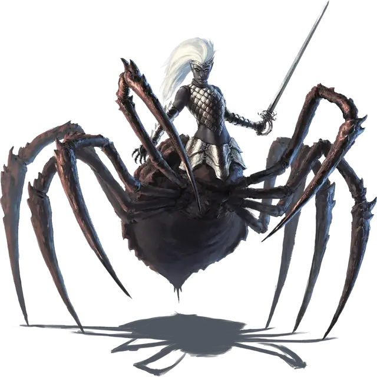

Драук
Drider
Большой Монстр, хаотично-злой

Класс Доспеха 19 (природный доспех)
Хиты 123 (13к10 + 52)
Скорость 30 футов, лазая 30 футов
| мод | спас | ||
|---|---|---|---|
| СИЛ | 16 | +3 | +3 |
| ЛОВ | 16 | +3 | +3 |
| ТЕЛ | 18 | +4 | +4 |
| мод | спас | ||
|---|---|---|---|
| ИНТ | 13 | +1 | +1 |
| МДР | 14 | +2 | +2 |
| ХАР | 12 | +1 | +1 |
Навыки Восприятие +5, Скрытность +9
Чувства тёмное зрение 120 футов, пассивное Восприятие 15
Языки Подземный, Эльфийский
Опасность 6 (2300 опыта)
Бонус мастерства +3
Среда обитания Подземье
Особенности
Наследие фей. Драук совершает с преимуществом спасброски от очарования, и магия не может его усыпить.
Врождённое колдовство. Базовой характеристикой драука является Мудрость (Сл спасброска от заклинания 13). Драук может накладывать следующие заклинания, не нуждаясь в материальных компонентах:
• Неограниченно: пляшущие огоньки [dancing lights]
• 1/день каждое: огонь фей [faerie fire], тьма [darkness]
Паучье лазание. Драук может лазать по сложным поверхностям, включая потолки, без совершения проверок характеристик.
Чувствительность к солнечному свету. Находясь на солнечном свету, драук совершает с помехой броски атаки, а также проверки Мудрости (Восприятие), полагающиеся на зрение.
Хождение по паутине. Драук игнорирует ограничения перемещения, вызванные паутиной.
Колдовство драуков. Драуки, которые когда-то были заклинателями, могут сохранить способность колдовать. Такие драуки обычно обладают более высокой базовой характеристикой (15 или 16). Кроме того, драук получает особенность Использование заклинаний. Таким образом, драук, который был божественным заклинателем, может иметь значение Мудрости 16 (+3) и следующую особенность:
Использование заклинаний. Драук является заклинателем 7-го уровня. Его базовой характеристикой является Мудрость (Сл спасброска от заклинаний 14, +6 к атакам заклинаниями). У него подготовлены следующие заклинания жреца:
• Заговоры (неограниченно): чудотворство [thaumaturgy], ядовитые брызги [poison spray];
• 1 уровень (4 ячейки): обнаружение магии [detect magic], порча [bane], убежище [sanctuary];
• 2 уровень (3 ячейки): тишина [silence], удержание личности [hold person];
• 3 уровень (3 ячейки): подсматривание [clairvoyance], рассеивание магии [dispel magic];
• 4 уровень (2 ячейки): предсказание [divination], свобода перемещения [freedom of movement].
Действия
Мультиатака. Драук совершает три атаки, либо длинным мечом, либо длинным луком. Он может заменить одну из этих атак атакой укусом.
Укус. Рукопашная атака оружием: +6 к попаданию, досягаемость 5 футов, одно существо. Попадание: Колющий урон 2 (1к4) плюс урон ядом 9 (2к8).
Длинный меч. Рукопашная атака оружием: +6 к попаданию, досягаемость 5 футов, одна цель. Попадание: Рубящий урон 7 (1к8 + 3), или рубящий урон 8 (1к10 + 3), если используется двумя руками.
Длинный лук. Дальнобойная атака оружием: +6 к попаданию, дистанция 150/600 футов, одна цель. Попадание: Колющий урон 7 (1к8 + 3) плюс урон ядом 4 (1к8).
Описание
«ОДНАЖДЫ Я ПОДВЕЛА КОРОЛЕВУ ПАУКОВ. БОЛЕЕ НИКОГДА»
— ПЕЛЛАНИСТРА, ДРАУК
Когда дроу подает большие надежды, Лолс призывает его в Ямы Демонической Паутины, чтобы испытать его веру и силу. Те, кто проходят испытание, возвышаются пред Лолс. Те же, кто не преуспеет, превращаются в драуков — ужасных гибридов дроу и гигантских пауков, которые служат живым напоминанием мощи Лолс. Лишь дроу может быть обращен в драука, и секретом такого превращения владеет только Лолс.
Пожизненная метка. Дроу, превращенный в драука, возвращается на Материальный План извращенным и униженным существом. Ведомые своим сумасшествием, они растворяются в Подземье, становясь отшельниками и охотниками, одиночками или вожаками стай гигантских пауков.
В редких исключениях, драуки возвращаются на окраины общества дроу, невзирая на свое проклятье, чаще всего, чтобы воплотить в жизнь давнюю клятву или месть из прошлой жизни. Дроу боятся и сторонятся драуков, ставя их даже ниже рабов. Но они терпят их присутствие, так как эти существа являются живым воплощением воли Лолс и напоминанием о судьбе, которая ожидает всех, кто подведет Паучью Королеву.